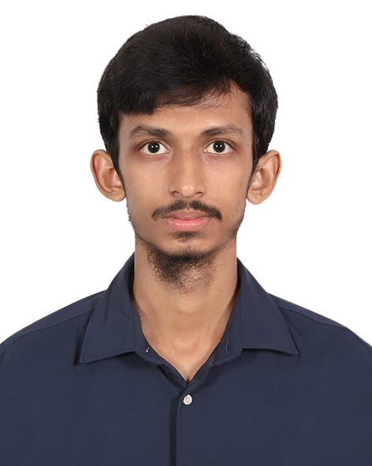
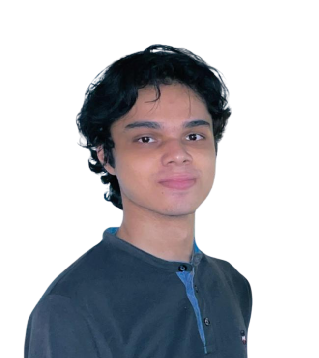

The Lab pairs Bangladesh's strongest undergraduates with seasoned ML engineers.
How it works
Each team is one mentor and two student fellows, owning a real BRAC problem end to end. Real deliverables, not toy demos.
Projects
What this cohort is building. placeholders
01Project One
One line on the problem and what the team will ship.
02Project Two
One line on the problem and what the team will ship.
03Project Three
One line on the problem and what the team will ship.
The Cohort
Each team is a mentor anchoring two fellows. Tap anyone for more. placeholders
01 Project One
Mentor
Mentor Onementor

Hasinfellow

Shreasfellow
02 Project Two
Mentor
Mentor Twomentor
Fellow Threefellow
Fellow Fourfellow
03 Project Three
Mentor
Mentor Threementor
Fellow Fivefellow
Fellow Sixfellow
Timeline
An 8-week cohort, launching August 2026.